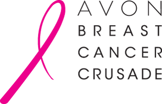
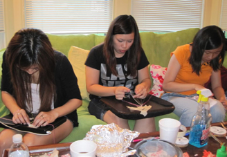
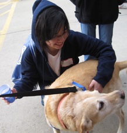

Breast Cancer Awareness — National Philanthropy
This year, more than 211,300 women in the United States will learn for the first time that they have breast cancer, and more than 39,800 women will lose their lives. Breast cancer is the most frequently diagnosed cancer in women in America; however, early detection and prompt treatment can significantly reduce the suffering and deaths caused by this disease. alpha Kappa Delta Phi, the largest nationwide Asian–American interest sorority, proudly promotes our National Philanthropy — Breast Cancer Awareness, a project which is dedicated to increasing public knowledge about the early detection of breast cancer. alpha Kappa Delta Phi at the University of Michigan holds an annual Think Pink! Food Festival and Think Pink Boob Cookie Day in October and donates all its proceeds to the Avon Breast Cancer Crusade, whom we have an exclusive partnership with. Last year, we raised over $1500 for the foundation through the food festival and our after party.
Avon Breast Cancer Crusade
The Avon Breast Cancer Crusade raises funds and awareness for breast cancer research and to advance access to care, with a focus on the medically underserved. From its launch in 1992, Avon’s Global Breast Cancer Crusade has expanded to more than 55 countries and by the end of 2009 had raised and awarded more than $640 million. Grants are made in five areas: breast cancer education and awareness, screening and diagnosis, access to treatment, support services and scientific research. The largest source of funds for the Avon Breast Cancer Crusade is the Avon Walk for Breast Cancer.
The Avon Walks are non–competitive weekend fundraising walks for all fitness levels. Since the launch of the series in 2003, more than $320 million has been raised through the dedication of over 120,000 participating women and men. The Walks take place in 9 cities, covering 39 miles in two days, and raise awareness and funds to fight breast cancer.
Progress has been made but there is still a new diagnosis of breast cancer in the U.S. every 3 minutes. The Avon Foundation for Women supports research to accelerate knowledge about the causes, diagnosis, treatments, and ways to prevent breast cancer. It works to facilitate research collaborations and to identify and fund new research directions. The Foundation also supports efforts to ensure the best quality of care for all, regardless of insurance status or ability to pay.
Additionally
Aside from all of our philanthropy work for Breast Cancer Awareness, the sisters of alpha Kappa Delta Phi strive to serve the community to the best of our abilities by participating in a number of community service activities such as:
- Knitwits
- Girls on the Run
- Ronald McDonald House
- Festifools
- Kid's Fair
- Goodness Day
- OneMichigan
- University of Michigan Dance Marathon (UMDM)
- smORG Carnival
- Relay for Life
Each year we strive to increase the number of community service events that we are involved in. It is the belief of all of the sisters at University of Michigan’s alpha Kappa Delta Phi that we reach out a little every day and continue to take the necessary steps in improving the community.
(If you are interested in co-hosting or having us participate or attend your service event, please contact our Vice President of Service.)
University of Michigan, alpha Kappa Delta Phi 2010-2011
Layout © Maria Lee 2010